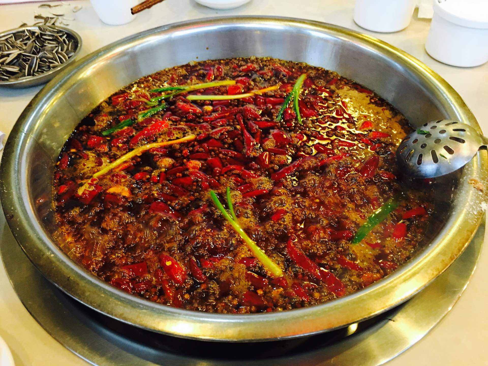
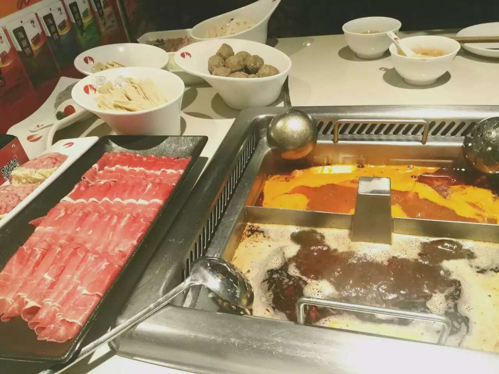

Info
Hot Pot Club at UCLA was founded on Oct. 9, 2016. It is the first and the largest hotpot club you will find here in Los Angeles. All UCLA students welcome.
Variation of Hotpot
Hotpot was initially created by Southwestern Chinese. It later evolved into a lot of different forms.
Chongqing Hotpot
When you see a nice 9-square super spicy hotpot, it is of Chongqing style, or the original style. It uses cow oil and puts less szechuan pepper into it. This kind of hotpot has a nice rich taste and is the most spicy of all.

Szechuan Hotpot
This is the closest variant of the original Chongqing hotpot. They were very similar, but Szechuan hotpot uses vegetable oil and puts a lot more szechuan peper in it. Generally Szechuan hotpot is much less spicy than their Chongqing counterpart. Although Szechuan hotpot is not the original innovation, later variations are actually based on this one.

Hai Di Lao
Hai Di Lao is the most popular form of hotpot outside Southwestern China. When most people around the globe refer to "hotpot", what they actually refer to is Hai Di Lao. Generally, this kind of hotpot offers more types of soups, like mushroom soups, duck soups, etc.. Hai Di Lao is also way less spicy than the former two and people usually eat sesame sauce with it.
